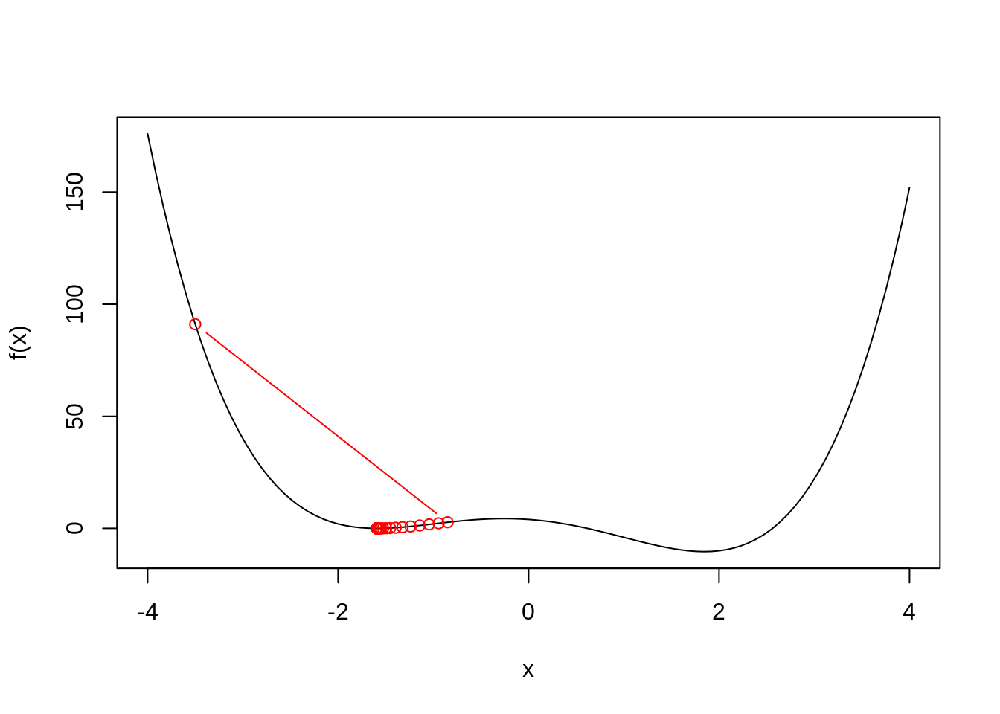
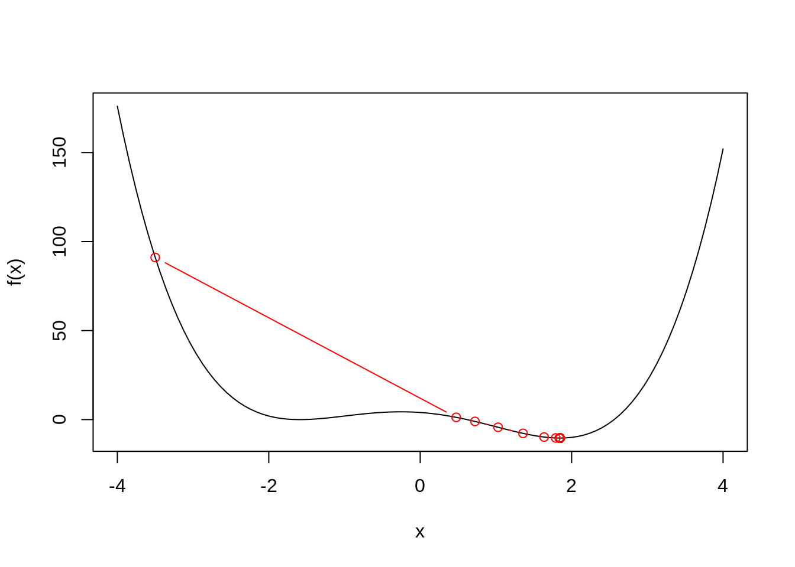
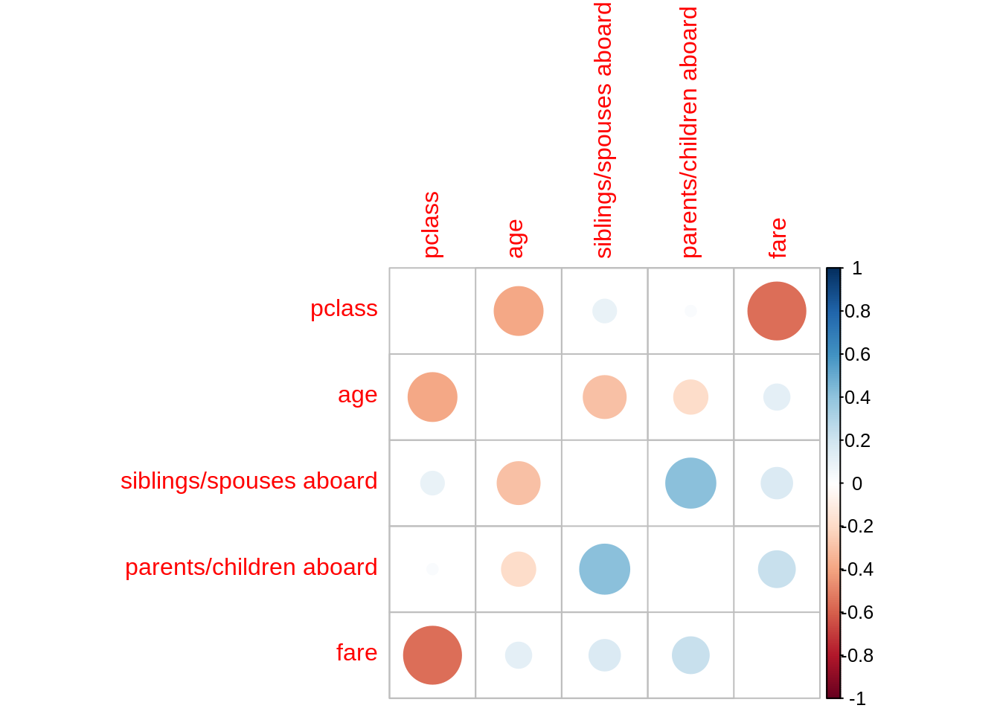
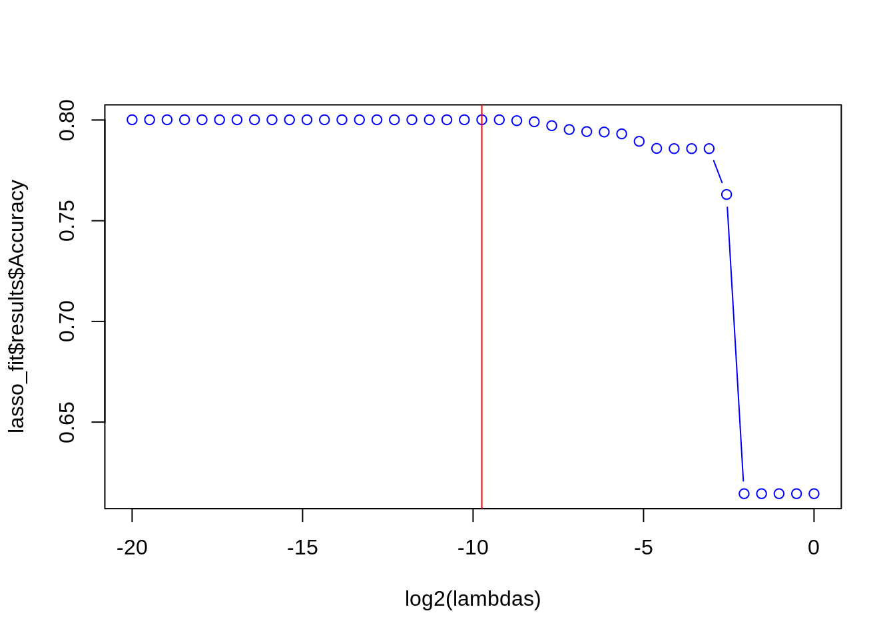
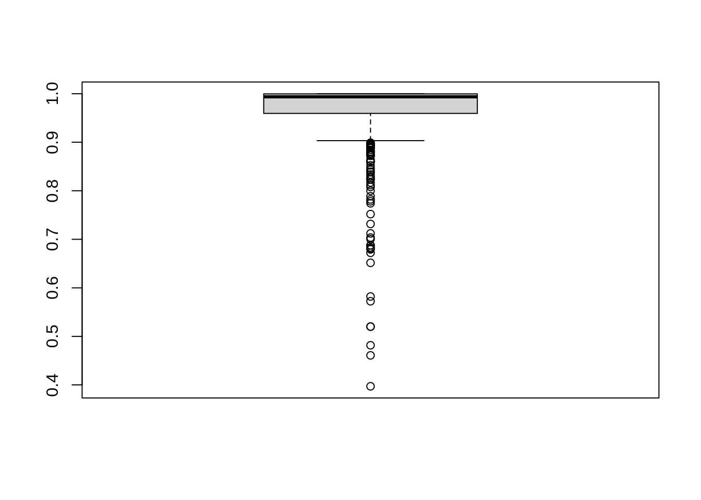

packages <- c(
"dplyr",
"readr",
"tidyr",
"purrr",
"stringr",
"report",
"corrplot",
"car",
"caret",
"torch",
"nnet",
"broom"
)
# renv::install(packages)
sapply(packages, require, character.only=T)
Due: Sun, Apr 2, 2023 @ 11:59pm
Please read the instructions carefully before submitting your assignment.
- This assignment requires you to only upload a
PDFfile on Canvas - Don’t collapse any code cells before submitting.
- Remember to make sure all your code output is rendered properly before uploading your submission.
⚠️ Please add your name to the author information in the frontmatter before submitting your assignment ⚠️
We will be using the following libraries:
Question 1
30 points
Automatic differentiation using torch
1.1 (5 points)
Consider \(g(x, y)\) given by \[ g(x, y) = (x - 3)^2 + (y - 4)^2. \]
Using elementary calculus derive the expressions for
\[ \frac{d}{dx}g(x, y), \quad \text{and} \quad \frac{d}{dy}g(x, y). \]
Using your answer from above, what is the answer to \[ \frac{d}{dx}g(x, y) \Bigg|_{(x=3, y=4)} \quad \text{and} \quad \frac{d}{dy}g(x, y) \Bigg|_{(x=3, y=4)} ? \]
Define \(g(x, y)\) as a function in R, compute the gradient of \(g(x, y)\) with respect to \(x=3\) and \(y=4\). Does the answer match what you expected?
g <- \(x, y) (x - 3)^2 + (y - 4)^2
x <- torch_tensor(3, requires_grad=TRUE)
y <- torch_tensor(4, requires_grad=TRUE)
g(x, y)$backward()
x$gradtorch_tensor
0
[ CPUFloatType{1} ]y$gradtorch_tensor
0
[ CPUFloatType{1} ]1.2 (10 points)
\[\newcommand{\u}{\boldsymbol{u}}\newcommand{\v}{\boldsymbol{v}}\]
Consider \(h(\u, \v)\) given by \[ h(\u, \v) = (\u \cdot \v)^3, \] where \(\u \cdot \v\) denotes the dot product of two vectors, i.e., \(\u \cdot \v = \sum_{i=1}^n u_i v_i.\)
Using elementary calculus derive the expressions for the gradients
\[ \begin{aligned} \nabla_\u h(\u, \v) &= \Bigg(\frac{d}{du_1}h(\u, \v), \frac{d}{du_2}h(\u, \v), \dots, \frac{d}{du_n}h(\u, \v)\Bigg) \end{aligned} \]
Using your answer from above, what is the answer to \(\nabla_\u h(\u, \v)\) when \(n=10\) and
\[ \begin{aligned} \u = (-1, +1, -1, +1, -1, +1, -1, +1, -1, +1)\\ \v = (-1, -1, -1, -1, -1, +1, +1, +1, +1, +1) \end{aligned} \]
Define \(h(\u, \v)\) as a function in R, initialize the two vectors \(\u\) and \(\v\) as torch_tensors. Compute the gradient of \(h(\u, \v)\) with respect to \(\u\). Does the answer match what you expected?
h <- \(u, v) torch_sum((u * v)^3)
u <- torch_tensor(
rep(c(-1, 1), 5),
requires_grad = TRUE
)
v <- torch_tensor(
c(rep(-1, 5), rep(1, 5)),
requires_grad = TRUE
)
h(u, v)$backward()
u$gradtorch_tensor
-3
-3
-3
-3
-3
3
3
3
3
3
[ CPUFloatType{10} ]v$gradtorch_tensor
-3
3
-3
3
-3
3
-3
3
-3
3
[ CPUFloatType{10} ]1.3 (5 points)
Consider the following function \[ f(z) = z^4 - 6z^2 - 3z + 4 \]
Derive the expression for \[ f'(z_0) = \frac{df}{dz}\Bigg|_{z=z_0} \] and evaluate \(f'(z_0)\) when \(z_0 = -3.5\).
Define \(f(z)\) as a function in R, and using the torch library compute \(f'(-3.5)\).
f <- \(z) (z^4) - 6 * (z^2) - 3 * z + 4
z <- torch_tensor(-3.5, requires_grad = TRUE)
f(z)$backward()
z$gradtorch_tensor
-132.5000
[ CPUFloatType{1} ]1.4 (5 points)
For the same function \(f\), initialize \(z[1] = -3.5\), and perform \(n=100\) iterations of gradient descent, i.e.,
\(z[{k+1}] = z[k] - \eta f'(z[k]) \ \ \ \ \) for \(k = 1, 2, \dots, 100\)
Plot the curve \(f\) and add taking \(\eta = 0.02\), add the points \(\{z_0, z_1, z_2, \dots z_{100}\}\) obtained using gradient descent to the plot. What do you observe?
df = \(z) 4* (z^3) - 12 * (z) - 3
plot_gd <- function(lr){
n <- 100
Z <- rep(-3.5, n)
for (i in 2:n) {
Z[i] <- Z[i - 1] - lr * df(Z[i - 1])
}
curve(f, -4, 4)
points(Z, f(Z), col = "red", type = "b")
}
plot_gd(0.02)
1.5 (5 points)
Redo the same analysis as Question 1.4, but this time using \(\eta = 0.03\). What do you observe? What can you conclude from this analysis
plot_gd(0.03)
The learning rate \(\eta\) plays a key role in whether gradient descent converges to a global minimimizer or just a local minimizer.
Question 2
50 points
Logistic regression and interpretation of effect sizes
For this question we will use the Titanic dataset from the Stanford data archive. This dataset contains information about passengers aboard the Titanic and whether or not they survived.
2.1 (5 points)
Read the data from the following URL as a tibble in R. Preprocess the data such that the variables are of the right data type, e.g., binary variables are encoded as factors, and convert all column names to lower case for consistency. Let’s also rename the response variable Survival to y for convenience.
url <- "https://web.stanford.edu/class/archive/cs/cs109/cs109.1166/stuff/titanic.csv"
df <- read_csv(url) %>%
mutate_if(\(x) is.character(x), as.factor) %>%
mutate(y = as.factor(Survived)) %>%
select(-c(Name, Survived)) %>%
(\(x) {
names(x) <- tolower(names(x))
x
})Rows: 887 Columns: 8
── Column specification ────────────────────────────────────────────────────────
Delimiter: ","
chr (2): Name, Sex
dbl (6): Survived, Pclass, Age, Siblings/Spouses Aboard, Parents/Children Ab...
ℹ Use `spec()` to retrieve the full column specification for this data.
ℹ Specify the column types or set `show_col_types = FALSE` to quiet this message.df %>% head() %>% knitr::kable()| pclass | sex | age | siblings/spouses aboard | parents/children aboard | fare | y |
|---|---|---|---|---|---|---|
| 3 | male | 22 | 1 | 0 | 7.2500 | 0 |
| 1 | female | 38 | 1 | 0 | 71.2833 | 1 |
| 3 | female | 26 | 0 | 0 | 7.9250 | 1 |
| 1 | female | 35 | 1 | 0 | 53.1000 | 1 |
| 3 | male | 35 | 0 | 0 | 8.0500 | 0 |
| 3 | male | 27 | 0 | 0 | 8.4583 | 0 |
2.2 (5 points)
Visualize the correlation matrix of all numeric columns in df using corrplot()
df %>%
select(where(is.numeric)) %>%
cor() %>%
round(digits=2) %>%
corrplot(diag=F)
2.3 (10 points)
Fit a logistic regression model to predict the probability of surviving the titanic as a function of:
pclasssexagefare# siblings# parents
full_model <- glm(y ~ ., df, family=binomial())
summary(full_model)
Call:
glm(formula = y ~ ., family = binomial(), data = df)
Deviance Residuals:
Min 1Q Median 3Q Max
-2.7789 -0.5976 -0.3987 0.6156 2.4409
Coefficients:
Estimate Std. Error z value Pr(>|z|)
(Intercept) 5.297252 0.557409 9.503 < 2e-16 ***
pclass -1.177659 0.146079 -8.062 7.52e-16 ***
sexmale -2.757282 0.200416 -13.758 < 2e-16 ***
age -0.043474 0.007723 -5.629 1.81e-08 ***
`siblings/spouses aboard` -0.401831 0.110712 -3.630 0.000284 ***
`parents/children aboard` -0.106505 0.118588 -0.898 0.369127
fare 0.002786 0.002389 1.166 0.243680
---
Signif. codes: 0 '***' 0.001 '**' 0.01 '*' 0.05 '.' 0.1 ' ' 1
(Dispersion parameter for binomial family taken to be 1)
Null deviance: 1182.77 on 886 degrees of freedom
Residual deviance: 780.93 on 880 degrees of freedom
AIC: 794.93
Number of Fisher Scoring iterations: 5full_predictions <- ifelse(
predict(full_model, df, type = "response") > 0.5, 1, 0
) %>% as.factor2.4 (30 points)
Provide an interpretation for the slope and intercept terms estimated in full_model in terms of the log-odds of survival in the titanic and in terms of the odds-ratio (if the covariate is also categorical).
We fitted a logistic model (estimated using ML) to predict y with pclass, sex, age, siblings/spouses aboard, parents/children aboard and fare (formula: y ~ pclass + sex + age + siblings/spouses aboard + parents/children aboard + fare). The model’s explanatory power is substantial (Tjur’s R2 = 0.41). The model’s intercept, corresponding to pclass = 0, sex = female, age = 0, siblings/spouses aboard = 0, parents/children aboard = 0 and fare = 0, is at 5.30 (95% CI [4.22, 6.41], p < .001). Within this model:
- The effect of pclass is statistically significant and negative (beta = -1.18, 95% CI [-1.47, -0.89], p < .001; Std. beta = -0.99, 95% CI [-1.23, -0.75])
- The effect of sex [male] is statistically significant and negative (beta = -2.76, 95% CI [-3.16, -2.37], p < .001; Std. beta = -2.76, 95% CI [-3.16, -2.37])
- The effect of age is statistically significant and negative (beta = -0.04, 95% CI [-0.06, -0.03], p < .001; Std. beta = -0.61, 95% CI [-0.83, -0.40])
- The effect of siblings/spouses aboard is statistically significant and negative (beta = -0.40, 95% CI [-0.63, -0.20], p < .001; Std. beta = -0.44, 95% CI [-0.70, -0.22])
- The effect of parents/children aboard is statistically non-significant and negative (beta = -0.11, 95% CI [-0.35, 0.12], p = 0.369; Std. beta = -0.09, 95% CI [-0.28, 0.10])
- The effect of fare is statistically non-significant and positive (beta = 2.79e-03, 95% CI [-1.60e-03, 7.99e-03], p = 0.244; Std. beta = 0.14, 95% CI [-0.08, 0.40])
Standardized parameters were obtained by fitting the model on a standardized version of the dataset. 95% Confidence Intervals (CIs) and p-values were computed using a Wald z-distribution approximation.
Question 3
70 points
Variable selection and logistic regression in torch
3.1 (15 points)
Complete the following function overview which takes in two categorical vectors (predicted and expected) and outputs:
- The prediction accuracy
- The prediction error
- The false positive rate, and
- The false negative rate
overview <- function(predicted, expected){
accuracy <- mean(predicted == expected)
error <- 1 - accuracy
fp <- sum(predicted=="1" & expected=="0")
tp <- sum(predicted=="1" & expected=="1")
fn <- sum(predicted=="0" & expected=="1")
tn <- sum(predicted=="0" & expected=="0")
false_positive_rate <- fp / (fp + tn)
false_negative_rate <- fn / (fn + tp)
return(
data.frame(
accuracy = accuracy,
error=error,
false_positive_rate = false_positive_rate,
false_negative_rate = false_negative_rate
)
)
}You can check if your function is doing what it’s supposed to do by evaluating
overview(df$y, df$y) accuracy error false_positive_rate false_negative_rate
1 1 0 0 0and making sure that the accuracy is \(100\%\) while the errors are \(0\%\).
3.2 (5 points)
Display an overview of the key performance metrics of full_model
overview(full_predictions, df$y) accuracy error false_positive_rate false_negative_rate
1 0.8015784 0.1984216 0.133945 0.30116963.3 (5 points)
Using backward-stepwise logistic regression, find a parsimonious altenative to full_model, and print its overview
step_model <- step(full_model)Start: AIC=794.93
y ~ pclass + sex + age + `siblings/spouses aboard` + `parents/children aboard` +
fare
Df Deviance AIC
- `parents/children aboard` 1 781.75 793.75
- fare 1 782.43 794.43
<none> 780.93 794.93
- `siblings/spouses aboard` 1 796.85 808.85
- age 1 815.81 827.81
- pclass 1 847.84 859.84
- sex 1 1021.33 1033.33
Step: AIC=793.75
y ~ pclass + sex + age + `siblings/spouses aboard` + fare
Df Deviance AIC
- fare 1 782.88 792.88
<none> 781.75 793.75
- `siblings/spouses aboard` 1 801.59 811.59
- age 1 816.44 826.44
- pclass 1 852.19 862.19
- sex 1 1025.55 1035.55
Step: AIC=792.88
y ~ pclass + sex + age + `siblings/spouses aboard`
Df Deviance AIC
<none> 782.88 792.88
- `siblings/spouses aboard` 1 801.61 809.61
- age 1 818.41 826.41
- pclass 1 900.80 908.80
- sex 1 1031.86 1039.86summary(step_model)
Call:
glm(formula = y ~ pclass + sex + age + `siblings/spouses aboard`,
family = binomial(), data = df)
Deviance Residuals:
Min 1Q Median 3Q Max
-2.7548 -0.5987 -0.3917 0.6143 2.4562
Coefficients:
Estimate Std. Error z value Pr(>|z|)
(Intercept) 5.532066 0.504750 10.960 < 2e-16 ***
pclass -1.265129 0.127021 -9.960 < 2e-16 ***
sexmale -2.736487 0.195730 -13.981 < 2e-16 ***
age -0.043697 0.007695 -5.679 1.36e-08 ***
`siblings/spouses aboard` -0.407770 0.105197 -3.876 0.000106 ***
---
Signif. codes: 0 '***' 0.001 '**' 0.01 '*' 0.05 '.' 0.1 ' ' 1
(Dispersion parameter for binomial family taken to be 1)
Null deviance: 1182.77 on 886 degrees of freedom
Residual deviance: 782.88 on 882 degrees of freedom
AIC: 792.88
Number of Fisher Scoring iterations: 5step_predictions <- ifelse(
predict(step_model, df, type = "response") > 0.5, 1, 0
) %>% as.factor
overview(step_predictions, df$y) accuracy error false_positive_rate false_negative_rate
1 0.8049605 0.1950395 0.133945 0.29239773.4 (15 points)
Using the caret package, setup a \(5\)-fold cross-validation training method using the caret::trainConrol() function
controls <- trainControl(method = "repeatedcv", number = 5, repeats=10)Now, using control, perform \(5\)-fold cross validation using caret::train() to select the optimal \(\lambda\) parameter for LASSO with logistic regression.
Take the search grid for \(\lambda\) to be in \(\{ 2^{-20}, 2^{-19.5}, 2^{-19}, \dots, 2^{-0.5}, 2^{0} \}\).
lasso_fit <- train(
x = model.matrix(full_model)[, -1],
y = df$y %>% as.factor(),
method = "glmnet",
trControl = controls,
tuneGrid = expand.grid(
alpha = 1,
lambda = 2^seq(-20, 0, length.out = 40)
),
family = "binomial"
)Using the information stored in lasso_fit$results, plot the results for cross-validation accuracy vs. \(\log_2(\lambda)\). Choose the optimal \(\lambda^*\), and report your results for this value of \(\lambda^*\).
lambda_star <- lasso_fit$bestTune$lambda
lambdas <- lasso_fit$results$lambda
plot(log2(lambdas), lasso_fit$results$Accuracy, type = "b", col = "blue")
abline(v = log2(lambda_star), col = "red")
lasso_predictions <- predict(lasso_fit, model.matrix(full_model)[, -1], type = "raw")3.5 (25 points)
First, use the model.matrix() function to convert the covariates of df to a matrix format
covariate_matrix <- model.matrix(full_model)[, -1]Now, initialize the covariates \(X\) and the response \(y\) as torch tensors
X <- torch_tensor(covariate_matrix, dtype=torch_float())
y <- torch_tensor(df$y == "1", dtype=torch_float())
X$shape[1] 887 6y$shape[1] 887Using the torch library, initialize an nn_module which performs logistic regression for this dataset. (Remember that we have 6 different covariates)
logistic <- nn_module(
initialize = function(m){
self$fc1 <- nn_linear(m, 1)
self$fc2 <- nn_sigmoid()
},
forward = function(x) {
x %>%
self$fc1() %>%
self$fc2()
}
)
f <- logistic(m=ncol(covariate_matrix))You can verify that your code is right by checking that the output to the following code is a vector of probabilities:
f(X) %>%
as_array %>%
boxplot
Now, define the loss function Loss() which takes in two tensors X and y and a function Fun, and outputs the Binary cross Entropy loss between Fun(X) and y.
Loss <- function(x, y, model){
nn_bce_loss()(model(x), y)
}Initialize an optimizer using optim_adam() and perform \(n=1000\) steps of gradient descent in order to fit logistic regression using torch.
f <- logistic(m=ncol(covariate_matrix))
optimizer <- optim_adam(f$parameters, lr=0.02)
n <- 1000
for (i in 1:n){
loss <- Loss(X, y, f)
optimizer$zero_grad()
loss$backward()
optimizer$step()
if (i < 10 || i %% 100 == 0){
cat(sprintf("Step: %d, Loss: %.4f\n", i, loss$item()))
}
}Step: 1, Loss: 10.1645
Step: 2, Loss: 9.5961
Step: 3, Loss: 8.9707
Step: 4, Loss: 8.3730
Step: 5, Loss: 7.7826
Step: 6, Loss: 7.1905
Step: 7, Loss: 6.5965
Step: 8, Loss: 6.0005
Step: 9, Loss: 5.4028
Step: 100, Loss: 0.5638
Step: 200, Loss: 0.5032
Step: 300, Loss: 0.4845
Step: 400, Loss: 0.4754
Step: 500, Loss: 0.4692
Step: 600, Loss: 0.4638
Step: 700, Loss: 0.4590
Step: 800, Loss: 0.4549
Step: 900, Loss: 0.4515
Step: 1000, Loss: 0.4487Using the final, optimized parameters of f, compute the compute the predicted results on X
predicted_probabilities <- f(X) %>% as_array()
torch_predictions <- ifelse(
predicted_probabilities > 0.5, 1, 0
) %>% as.factor
overview(torch_predictions, df$y) accuracy error false_positive_rate false_negative_rate
1 0.7970688 0.2029312 0.1321101 0.31578953.6 (5 points)
Create a summary table of the overview() summary statistics for each of the \(4\) models we have looked at in this assignment, and comment on their relative strengths and drawbacks.
list(full_predictions, step_predictions, lasso_predictions, torch_predictions) %>%
lapply(\(x) overview(x, df$y)) %>%
bind_rows() %>%
knitr::kable()| accuracy | error | false_positive_rate | false_negative_rate |
|---|---|---|---|
| 0.8015784 | 0.1984216 | 0.1339450 | 0.3011696 |
| 0.8049605 | 0.1950395 | 0.1339450 | 0.2923977 |
| 0.8015784 | 0.1984216 | 0.1321101 | 0.3040936 |
| 0.7970688 | 0.2029312 | 0.1321101 | 0.3157895 |
Session Information
Print your R session information using the following command
sessionInfo()R version 4.2.2 (2022-10-31)
Platform: x86_64-conda-linux-gnu (64-bit)
Running under: Storage
Matrix products: default
BLAS/LAPACK: /gpfs/group/hvt5139/default/tools/mambaforge/lib/libopenblasp-r0.3.21.so
locale:
[1] LC_CTYPE=en_US.UTF-8 LC_NUMERIC=C
[3] LC_TIME=en_US.UTF-8 LC_COLLATE=en_US.UTF-8
[5] LC_MONETARY=en_US.UTF-8 LC_MESSAGES=en_US.UTF-8
[7] LC_PAPER=en_US.UTF-8 LC_NAME=C
[9] LC_ADDRESS=C LC_TELEPHONE=C
[11] LC_MEASUREMENT=en_US.UTF-8 LC_IDENTIFICATION=C
attached base packages:
[1] stats graphics grDevices datasets utils methods base
other attached packages:
[1] broom_1.0.4 nnet_7.3-18 torch_0.9.0 caret_6.0-94
[5] lattice_0.20-45 ggplot2_3.4.1 car_3.1-1 carData_3.0-5
[9] corrplot_0.92 report_0.5.7 stringr_1.5.0 purrr_1.0.1
[13] tidyr_1.3.0 readr_2.1.4 dplyr_1.1.0
loaded via a namespace (and not attached):
[1] nlme_3.1-162 lubridate_1.9.2 bit64_4.0.5
[4] insight_0.19.1 tools_4.2.2 backports_1.4.1
[7] utf8_1.2.3 R6_2.5.1 rpart_4.1.19
[10] colorspace_2.1-0 withr_2.5.0 tidyselect_1.2.0
[13] processx_3.8.0 bit_4.0.5 compiler_4.2.2
[16] glmnet_4.1-6 performance_0.10.2 cli_3.6.0
[19] bayestestR_0.13.0 scales_1.2.1 callr_3.7.3
[22] digest_0.6.31 rmarkdown_2.20 coro_1.0.3
[25] pkgconfig_2.0.3 htmltools_0.5.4 parallelly_1.35.0
[28] fastmap_1.1.0 rlang_1.0.6 shape_1.4.6
[31] generics_0.1.3 jsonlite_1.8.4 ModelMetrics_1.2.2.2
[34] magrittr_2.0.3 parameters_0.20.2 Matrix_1.5-3
[37] Rcpp_1.0.10 munsell_0.5.0 fansi_1.0.4
[40] abind_1.4-5 lifecycle_1.0.3 stringi_1.7.12
[43] pROC_1.18.0 yaml_2.3.7 MASS_7.3-58.3
[46] plyr_1.8.8 recipes_1.0.5 grid_4.2.2
[49] parallel_4.2.2 listenv_0.9.0 splines_4.2.2
[52] hms_1.1.2 knitr_1.42 ps_1.7.2
[55] pillar_1.8.1 effectsize_0.8.3 future.apply_1.10.0
[58] reshape2_1.4.4 codetools_0.2-19 stats4_4.2.2
[61] glue_1.6.2 evaluate_0.20 data.table_1.14.8
[64] renv_0.16.0-53 vctrs_0.5.2 tzdb_0.3.0
[67] foreach_1.5.2 gtable_0.3.1 datawizard_0.7.0
[70] future_1.32.0 xfun_0.37 gower_1.0.1
[73] prodlim_2019.11.13 class_7.3-21 survival_3.5-5
[76] timeDate_4022.108 tibble_3.1.8 iterators_1.0.14
[79] hardhat_1.2.0 lava_1.7.2.1 timechange_0.2.0
[82] globals_0.16.2 ellipsis_0.3.2 ipred_0.9-14